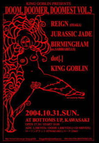

2004.10.31川崎BOTTOMS UP
King Goblin presents "DOOM, DOOMER, DOOMEST vol.3"
KING GOBLIN /REIGN (OSAKA)
BIRMINGHAM (ex.SABBRABELLS)/dot[.]
 |
●ＪＵＲＡＳＳＩＣ ＪＡＤＥ’Ｓ setlists
Divided Power,Reverse
Left Eye On The TV
Fight For What For
ゴーグル・太陽・月
テロルの季節
9月の詩
G.D.G
精神病質（Seisin-Byo-Shitsu）〜Go To The Dogs〜The Individual D-Day〜Chaos
Queen〜僕らの狂気〜After Killing Mam
鏡よ鏡
ドク・ユメ・スペルマ
-Encore-
香港庭園
●ＭＥＭＢＥＲ’Ｓ comment
ＨＩＺＵＭＩ
ＮＯＢ
GEORGE
ＨＡＹＡ
●ＡＬＢＵＭ
| (C)フジイ コウジ氏撮影 |
| (C)さる氏 撮影 |
●BBS comment
今週末 投稿者：さる 投稿日：10月28日(木)23時32分59秒
BYS11でヘロヘロボロボロになったのもついこの間♪
さて、川崎ライブが手の届くくらい近い！楽しみですー。
で「Left Eye」、本当にスルメ！というか未だに色んな味になるんですけど‥‥
あのー、耳から入るサブリミナル的な何かが入っていませんでしょうか？(汗)
それくらいハマリまくってます。
ということで日曜日、よろしくお願いします！
METAL CALIFORNIA？ 投稿者：藤井 投稿日：10月30日(土)02時46分6秒
というわけで、今日は、東京ドームにEAGLESを観にいきちょっとアコースティックに…。
そして、次の日は、川崎にて、怒涛の爆音でMETAL CALIFORNIAな感じでいきましょう！いや、KAWASAKIでしたね。
なんだか、わけわかんない書き込みでした。
新曲、期待しています。（と、プレッシャー（笑））
LEFT 愛 投稿者：藤井 投稿日：11月 1日(月)01時27分42秒
…って、それだと、別れの失恋ソングになってしまう。（爆笑）
やっぱり、アルバム出してからのJURASSIC JADEの勢いは凄くいいな、という感じです！まだ音源が出ていなかった頃のライヴは、楽曲に対して暗中模索という感じがあったのですが、ついに完成品が出た今、なんとなく、この曲は、この曲！！という存在感がある気がします。もちろん、それでも音源化したら最後、というわけではなく、楽曲はオーディエンスとの交流でいろいろに変わる部分もありますが。（というわけで、来年は20周年だし、新作じゃなくても、ライヴ・アルバムを出して欲しいです。ライヴDVDとか映像ではなく、ライヴ盤が聴きたいですね。個人的には。音だけの方がいいんです。）
今日のようなイベントは僕のような'70年代へヴィ・ロック好きには耐えられません。やっぱりサイケ野郎なんですね、私は。再確認しました。でも、JURASSIC JADEの現在の音にはそういう要素があると思いますよ。
写真、送りました。
よろしくです。
会場で会った方々、またお会いしましょう。筑波で！！（笑）
お疲れさまでした 投稿者：アラキング@KING GOBLIN 投稿日：11月 1日(月)19時25分2秒
ドラムゴブリンでございます。
昨日はヤバかったです。
二度とないほどに漆黒の一日になりました。
メンバー一同感極まっております。
また是非お手合せよろしくお願いいたします。
http://www1.ttcn.ne.jp/~king-goblin
ありがとうございました!!!!! 投稿者：NOB-JURASSIC JADE 投稿日：11月 1日(月)20時25分43秒
昨夜の川崎BOTTOMS UPでのライブ、いかがだったでしょうか？
お越しの皆さん、ありがとうございました。
重いバンドさんたちの中で少々浮き気味でしたが、望むところのJURASSIC JADEです。
精一杯演奏させていただきました。
＞KING GOBLIN 様
誘ってくれてありがとう！実は重いサウンドを狙っているバンドさんたちとあまり、ご一緒していない俺たちです。新しい出会いありがとう。
＞REIGN (OSAKA)/BIRMINGHAM (ex.SABBRABELLS)/dot[.]の方々
お疲れ様でした！ご一緒出来て楽しかったです。
＞BOTTOMS UPのスタッフの方々
ありがとうございました。多量の機材の持ち込みご迷惑かけました。
演奏しやすい環境でありがたかったです。また、よろしくお願いします。
さて、次は!!!!!
●11月13日（土）難波ROCKETS
SPEED KILLS 〜into the pit〜 vol.20
OPEN: 18:00 START: 18:30
ADV: \1800+1drink AT DOOR: \2300+1drink
With: GRIM FORCE //BEHAVIOR/FREE WILL/GODIE
●11月14日（日）名古屋鶴舞DAYTRIP
OVER the WALL
OPEN: 18:00 START: 18:30 ADV:\2000(no drink) AT DOOR: \2300(no drink)
With: CATAPLEXY/無我/LOST EDEN/FUNERAL ELEGY/NAQRO
です。チケット予約承ります。メールで問い合わせ・予約お待ちしてます。
それから、来年1月に四国に伺います。結成以来上陸したことの無い四国！楽しみです。詳しくは近日中にUPします。
Kawasaki 投稿者：wildcats 投稿日：11月 1日(月)21時56分32秒
doomな一日でしたが、初めて見るバンドばかりで楽しい一夜でした。
JJのライブもレコ発に比べたら短かったですが、それでもいつもと変わらぬ勢いで圧倒されました。やはりラストのメドレーは圧巻です。
体調が悪く、あまり暴れることもできなかったのですが、十分楽しませて貰いました！
次回確実に見れるのは12/29になりますが、渋谷もなんとか都合をつけて足を運びたいです。
お疲れ様でした。 投稿者：さる 投稿日：11月 2日(火)00時39分10秒
楽しみな川崎ライブ♪と思った現場に行ったら場外も場内も馴染みの方々が揃ってて
うちら川崎市民なのに(汗)・・・遅刻癖を直さないと！と反省。
えーっライブ当日、風邪っぴきだったんです。昔から風邪をひいたら
「水分を摂取して汗を掻いて服に染みたらすぐ着替える！」というのが鉄則ですが
「アルコールを摂取してライブで汗ダクになりライブ終了後にTシャツ買って着替える！」
という方法を現場で試してみました！が、風邪の治療法としてこの方法を薦めてよいのか...(汗)
そんなこんなでライブ。
今回はレギュラーボリュームでしたがまたアンコール付！(出てこないの？って不安でしたが)
にもかかわらず自分の体調のせいでまた粗大ゴミ化するところでした。
わたしはまたも最前列♪ただbottoms up の最前列の柵が "−−＋−−＋−−"となっており
その柵の"＋"で額を打ってタンコブ出来るわ、右腕を打ちまくりアザが10箇所以上出来るわ、
さらにライブで暴れて汗腺から多量の汗と鼻から多量の脳ミソ出るわでもう大変。
ライブ前は少々おとなしくしようかと思ったのですが、考えるだけ無駄のようですね(笑)
今年の都内、残すは本当に渋谷だけになってしまったのでしょうか？
もしそうであれば、今回の自堕落状態を反省し完璧な状態で望みます！
ライブ当日、熱いライブへのお礼だけでなくそれ以上のお礼を言うべき出来事も多々あり
本当にありがとうございました！今日はちょっと無理そうなので別の形で返信を。
そのお礼といってはなんですが(殴)またも当日の模様をUPしてみました。
これからもよろしくお願いします。
http://home.g03.itscom.net/boana/
わしも… 投稿者：藤井 投稿日：11月 2日(火)08時02分18秒
＞"＋"で額を打ってタンコブ出来るわ
KING GOBLINの時、スロー・ヘッド・バンギングして打ったよ。さるさん。イタカッタ。
楽しいイベントでした 投稿者：shiki 投稿日：11月 2日(火)12時54分28秒
>JJの皆様
日曜日はお疲れさまでした〜。
JJさんと初対バン＆一つ前の出番ということで妙に緊張して
しまいましたが（汗）、JJさんのお客さんも皆さんいい反応を
返して下さって凄く嬉しかったです。
ウチのイベントにもご縁がありましたら是非ご参加下さい。
次の機会にはメタル談義を是非。
>HAYAさん
太鼓貸して頂いて、有り難うございました。
十ウン年前に先輩から買った8インチスネアを叩いている自分ですが、
アレのおかげでパワーかなりついたと思ってましたが、
あの深胴タムの前ではまだまだでした。
http://www.reign.jp
BACK TO